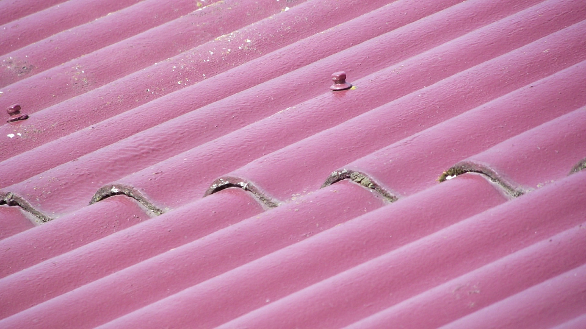
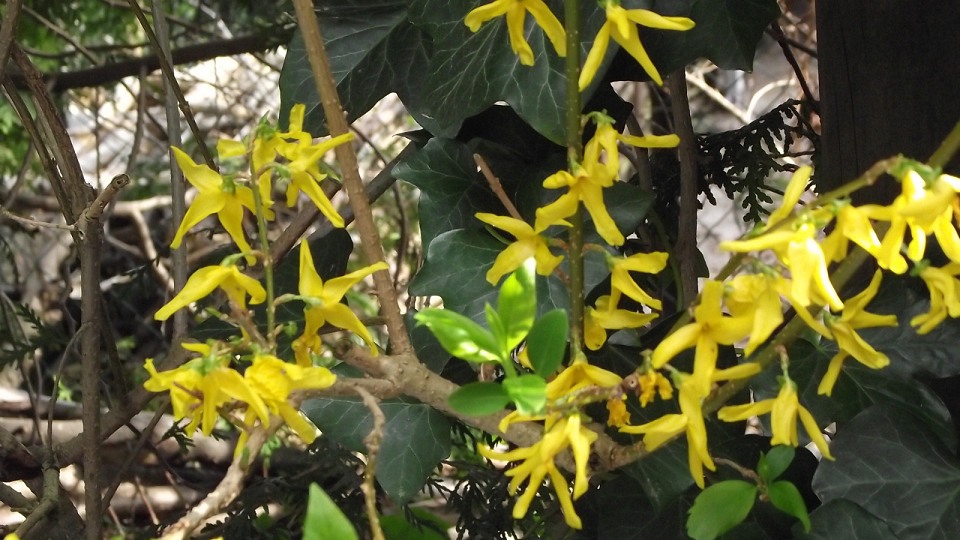
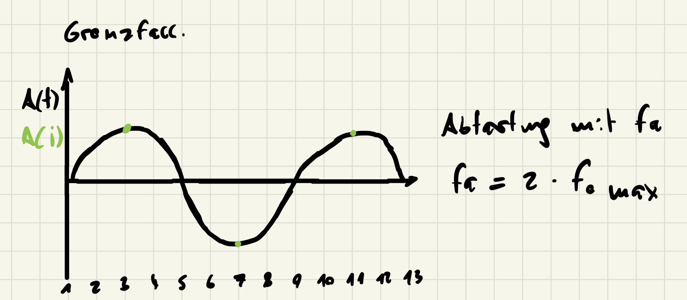

|  |  |
Header gibt aus:
Dateigröße 1555254
Bits pro Pixel 24
Breite 960
Höhe 540
Für sowohl die Bitmap von Manmade als auch Nature
Die Attribute sind die Dateigröße in Bytes, die Bits für jeden Pixel(in dem Fall 24, da für Rot, Gelb Blau jeweils 8 pixel nutzt)
Breite und Höhe stehen für jeweils die Breite und Höhe des Bildes in Pixeln
Dateigröße errechnet sich aus Höhe x Breite x (Farbkanäle, also in unserem fall 3, Rot, Gelb und Blau)+ ein wenig extra, für bmp sind das 54 Byte,
14 für "BITMAPFILEHEADER", und 40 für "BITMAPINFOHEADER", und wenn wir diese 54 zu den 1.555.200 zu rechnen, die wir erhalten, wenn wir unsere Daten
in die Rechnung eingebn, kommen wir auch auf die 1555254, die uns das Programm zurückgibt
code:
int ra = bmp.image.getRgbPixel(x,0).r;
int ga = bmp.image.getRgbPixel(x,0).g;
int ba = bmp.image.getRgbPixel(x,0).b;
bh.write(String.valueOf(ra) + " " + String.valueOf(ga) + " " + String.valueOf(ba) + "\n");
Ausgabe für grating_H8
Horizontal:
173 173 173
34 34 34
13 13 13
136 136 136
248 248 248
206 206 206
64 64 64
1 1 1
99 99 99
232 232 232
(und danach das gleiche gespiegelt, bevor es sich wiederholt)
geschätzte Periodendauer: 10 pixel
Vertikal:
173 173 173
und dann wiederholt es sich unendlich
existiert keine periode, also keine Periodendauer
Ausgabe für grating_V2
Horizontal
217 217 217
und dann wiederholt es sich unendlich
existiert keine periode, also keine periodendauer
Vertikal:
die Periode scheint sehr lang zu sein, da sich die werte erst nach ca 80 zeilen spiegeln, hier ist ein Ausschnitt der 7 Zeilen vor und nach diesem Punkt
242 242 242
172 172 172
75 75 75
9 9 9
11 11 11
80 80 80
176 176 176
244 244 244
244 244 244
176 176 176
80 80 80
11 11 11
9 9 9
75 75 75
172 172 172
242 242 242
geschätzte Periodendauer: 80 pixel
Das Abtasttheorem besagt, dass die Abtastfrequenz mindestens doppelt so hoch sein muss wie die höchste Frequenzkomponente: fs ≥ 2 * fmax.
Der Grenzfall tritt also auf wenn fs = 2 * fmax, wird dies nicht erfüllt könnte Aliaising entstehen.
code:
int grau= (int)Math.round(0.3 * bmp.image.getRgbPixel(x,y).r + 0.6 * bmp.image.getRgbPixel(x,y).g + 0.1 * bmp.image.getRgbPixel(x,y).b);
PixelColor pixel = new PixelColor(grau, grau, grau);
bmp.image.setRgbPixel(x,y,pixel);
Ergebnisse:
|
|
Bei einer zu geringen Abtastrate kann Aliasing entstehen. Es können Information verloren gehen, wenn 2 Pixel zu einem werden
Ein weiterer Fall, bei dem Aliasing auftreten kann ist, wenn die Bildgröße für den Inhalt zu klein ist, wodurch Fehler im Bild auftreten.
code für horizontales downsampling:
if(x % != 0){
PixelColor pixel = bmp.image.getRgbPixel(x-1,y);
bmp.image.setRgbPixel(x,y,pixel);
Ergebnisse sind zu sehen nach horizontalem downsampling mal 3 auf grating H8(auf V2 ergibt es keinen sinn, weil alle pixel in x richting gleich sind):
 |
 |
code für vertikales downsampling:(der gleich Code wie zuvor, nur für y statt x)
if(x % 3 != 0){
PixelColor pixel = bmp.image.getRgbPixel(x-1,y);
bmp.image.setRgbPixel(x,y,pixel);
Ergebnisse sind zu sehen nach vertikalem downsampling mal 3 auf grating V2(auf H8 ergibt es keinen sinn, weil alle pixel in y richting gleich sind):
 |
 |
Sowohl beim vertikalen dowsampling, als auch beim horizontalen downsampling werden die feinen Striche gröber und dicker. Außerdem werden die verschiedenen Schwarz und Grautöne sichtbarer.
nach 4 mal Horizontalem downsampling erkennt man langsam die Verpixelung des Manmade Bildes an den Farbübergängen
 |
bei dem Natur-Bild kann man schon die verpixelung nach 3 maligem Horizontalem Downsampling sehen
 |
Code:
int rReduced = bmp.image.getRgbPixel(x,y).r / reduced_bits;
int gReduced = bmp.image.getRgbPixel(x,y).g / reduced_bits;
int bReduced = bmp.image.getRgbPixel(x,y).b / reduced_bits;
PixelColor pixel = new PixelColor(rReduced * reduced_bits,gReduced * reduced_bits,bReduced * reduced_bits);
bmp.image.setRgbPixel(x,y,pixel);
Bei dem Naturbild kann man schon bei einer Reduktion von 2 bit erkennen, dass Detail verloren geht, vor allem in den dunklen tönen in der oberen rechten Ecke
Der Qualitätsverlust des ganzen Bildes wird aber erst bei ca 4 bit sichtbar. Hier Sieht man das langsam die Farbübergänge undeutlich werden
 |
 |
Im manmade Bild sind mit genauerem Blick/Zoom bei einer Reduktion von 4 bit Unterschiede erkennbar, und ab 5 auch ohne
 |
 |
Code:
reduced_bits = 2^4;
int bitsPerColor = 2^(8-4-1);
for(int y = 0; y < bmp.image.getHeight(); y++) {
for (int x = 0; x < bmp.image.getWidth(); x++) {
// ********* ToDo ***************
int rReduced = bmp.image.getRgbPixel(x,y).r / reduced_bits;
int gReduced = bmp.image.getRgbPixel(x,y).g / reduced_bits;
int bReduced = bmp.image.getRgbPixel(x,y).b / reduced_bits;
rReduced = rReduced * bitsPerColor;
gReduced = gReduced * bitsPerColor;
bReduced= bReduced * bitsPerColor;
int rDiff = bmp.image.getRgbPixel(x,y).r - rReduced;
int gDiff = bmp.image.getRgbPixel(x,y).g - gReduced;
int bDiff = bmp.image.getRgbPixel(x,y).b - bReduced;
PixelColor color = new PixelColor(rDiff + 128,gDiff + 128,bDiff + 128);
bmp.image.setRgbPixel(x,y,color);
}}
Difernezbild Nature 4 bit

Difernezbild Manmade 4 bit